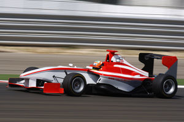
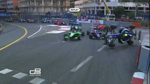

GP3 Series
 De: La Frikipedia, la enciclopedia extremadamente seria.
De: La Frikipedia, la enciclopedia extremadamente seria.
| De la serie deportes para todos:
|
| Gepe tré Serieh
|
|
|
| Número de practicantes
|
27 (no es coña)
|
| ¿Deporte Olímpico?
|
No, no es olímpico.
|
| Campeonatos
|
El de pilotos y el de constructores.
|
| ¿Donde se practica?
|
Europa.
|
| ¿Control anti-dopping?
|
Lo dudo mucho.
|
| Riesgo de muerte
|
Altísimo, los pilotos son inexpertos.
|
| Árbitro
|
Los comisarios de la maFIA.
|
| Hinchas
|
Ni uno Algunos habrá, digo yo
|
Competición que se creó en 2010 por parte de la Fórmula 2 y la Fórmula 3.
Fundamentación
 Posiblemente, los monoplazas más feos que jamás hayan existido sean estos
¿En serio tiene fundamentación alguna esto? En principio se hizo para gastar algunos leros, total, les sobran ayudar a los manazas jóvenes pilotos que irán a la Jé Pedos, y posteriormente a la Fórmula 1.
Aunque parezca el chiste del año, la FOM regula esta categoría, lo que nos lleva a todos a una pregunta: QUE COJONES ¿Acaso estos no regulan la Fórmula 1, y ya lo hacen rematadamente mal? Esperamos (para bien de todos) que se den cuenta lo antes posible.
Chasis
 Una
hostiada salida habitual de la GP3 Series
Los chasis los diseña el chatarrero de la esquina Dallara (que son mas feos que tú), los neumáticos son Pirelli y los motores los suministra Ruinault. La potencia de estos cachivaches monoplazas vendría a ser una mierda intermedia entre un Guorl Series by Renó y un Fórmula 3000000000000000000.
Características de esto
- Motor: Un motor extraído de una moto de los años cincuenta.
- Chasis: Un Dallara, formado con restos de chatarra encontrados en el desguace.
- Combustible: Gaseosa.
- Ruedas: Pirelli de la temporada 1979 usadas unas 700 veces.
- Caja de cambios: Una tal Hewland que sospechamos no tiene más de 2 marchas.
- Aerodinámica: ¿Tiene aerodinámica esto?
- Pintura: Esta pintado con lápices de colores específicos para cada equipo.
- Patrocinadores: Depende de cada equipo.
- Valoración: -100/100.
- Predecesor y sucesor: De predecesor ninguno (¿Qué esperabas? Es una categoría nueva), y ya veremos si tienen 2ª temporada.
El mundial
Viene a ser un mundial coincidiendo con el de la Ge Pedos, excepto en Mónaco donde no acabaría ni un solo piloto por lo novatos que son. Los pilotos son desconocidos (y las escuderías también), así que en resumen a esto no se le hace ni puto caso no es muy conocido.
Circuitos
Equipos
La mayoría están en la Ge Pedos
- AResTé Grand Prix
- Arden International
- Koñanen GP
- Carlin Motorsport
- Mierdussia Manor Racing
- Ruso Tiempo
- Jenzer Motorsport (¿originalidad? ¿¡Donde que no la encuentro!?)
- TridentE (
pringaos como todas las personas relacionadas con la GP2 y GP3 seres traídos por Neptuno para ser relleno)
- Status Grand Prix (a que pensaron que les estallaría el cerebro pensando el nombre y pusieron eso)
¿Sabías que...
- Esta competición no la televisa ningún canal en Aspaña?
- Tampoco la vería ni el tato?
- El equipo Manor que intentó entrar en la Fórmula 1
que no lo hicieron porque son malos de cojones?
- Aquí hay aspañoles como Miki Monràs, Roberto Merhi, Dani Juncadella o Carlos Sainz Jr.?
- Los coches son feos de cojones? (Como El enchufao ese)
- Tan solo Daniil Kvyat ha logrado pasar a la Fórmula 1 compitiendo desde aquí?
- Status fue el peor equipo de la temporada anterior (2013) con 18 puntos?
Enlaces externos
Autor(es):
- Conan
- Butters2
- ADrIaN1996
- Jesus el mejor
- 929roger
- Genericool
- Dancob
- Generibot
- Trolleardor241
- Alangd
Frikipedia 2005-2016, Licencia
GFDL 1.2 - Extraído por FrikiLeaks